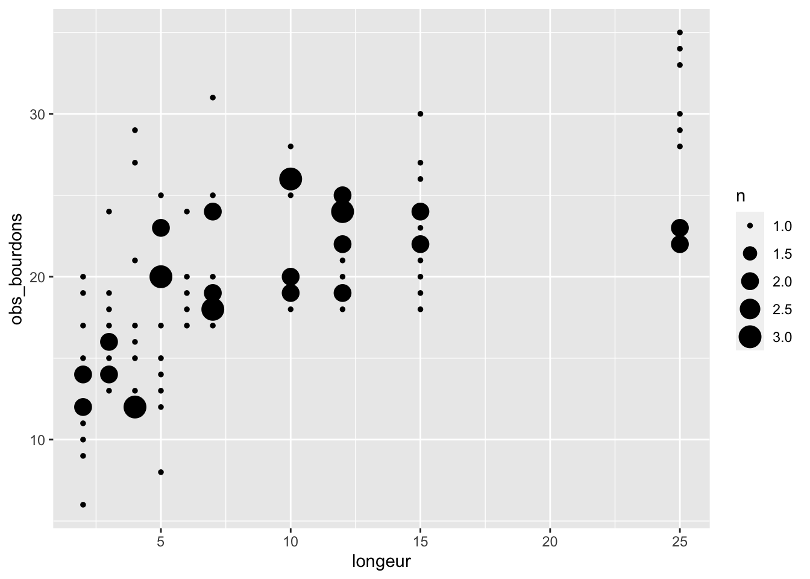
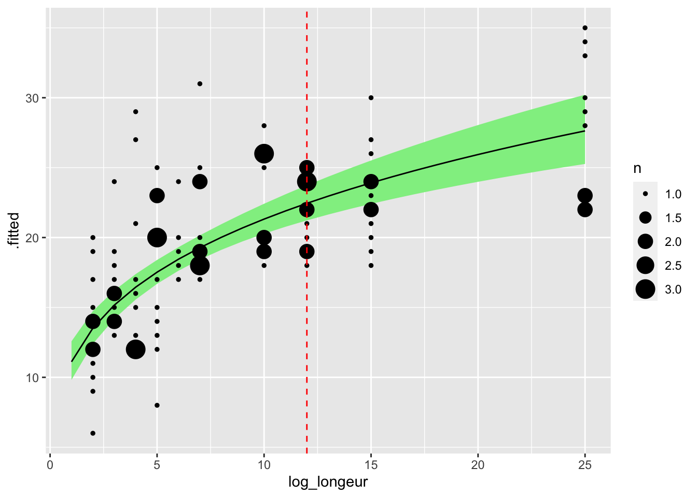

library(tidyverse)The backgroung
Power laws are very common in ecology. One reason for this is surely how easy it is to fit and plot. There are also many reasons based on theory, for example famous work on metabolic scaling.
The Math
“Power law” is just a fancy name for a polynomial with an exponent between 0 and 1. This gives a declerating curve (figure below)
Power laws look like this:
\[ y = ax^b \]
It becomes linear if you log both sides, like this:
\[ \ln{y} = \ln{a} + b\ln{x} \]
This is a format we can fit with our favourite linear OLS function, lm().
Simulate data
We’re simulating data here to roughly imitate a dataset on bumblebees collected by Amélie Morin from Université Laval.
This is a very simplified look at only one part of the dataset. Here we are asking if there are more bumblebees in longer strips of habitat. The independent variable is the length of the strip, in meters. The response is the observed counts of bumblebees.
We begin by picking parameter values and a range of simulated X variables
a <- 11
b <- 0.3
# longeur <- runif(104, min = 2, max = 25)
longeur <- sample(c(2:7, 10, 12, 15, 25), size = 104, replace = TRUE)
moy_bourdons <- a * longeur ^b
plot(longeur, moy_bourdons)
We simulate observations of counts using a Poisson distribution, so that the data resemble biological reality.
obs_bourdons <- rpois(104, lambda = moy_bourdons)
tibble(longeur, obs_bourdons) |>
ggplot(aes(x = longeur, y = obs_bourdons)) +
geom_count()
Note
Here we are using a model which is similar to, but not identical to, the model we used to generate the data. That is to emphasize that while this technique (i.e. a linear model on log-transformed data) is not perfect, it still gets very close and is a great solution in many cases.
Fit a power law
We fit the model by log-transforming and then fitting a straightforward linear model.
bourdon_data <- tibble(longeur, obs_bourdons)
bourdon_data_log <- bourdon_data |>
mutate(log_longeur = log(longeur),
log_obs_bourdons = log(obs_bourdons))
lm_pwr <- lm(log_obs_bourdons ~ log_longeur, data = bourdon_data_log)Predict
To draw a line and confidence intervals we make predictions. However these are NOT predictions on the original data, but on a nice even sequence of values on the x-axis.
A few points to note here:
- I take a range of x-values and then log-transform them, then transform them back. This imitates the same process that we went throught with the actual data
- I’m using
broom::augmentfrom thebroompackage. It is awesome! It takes a model and a dataset, and adds the prediction to the dataset as a new set of columns. See?broom::augmentfor all the details. - Once we have the predictions, we need to back-transform everything by exponentiating with
exp(): the average response (.fitted), the lower and upper confidence intervals (.lowerand.upper) and of course the x-axis values. Here i use a little function from the tidyverse to applyexp()to all columns at once. Learn more by typingvignette("colwise").
new_data <- tibble(log_longeur = log(1:25))
predictions_pwr <- broom::augment(x = lm_pwr,
newdata = new_data,
interval = "confidence") |>
mutate(across(everything(), exp))Plot
Finally we plot the transformed predictions using ggplot2:
predictions_pwr |>
ggplot(aes(x = log_longeur, y = .fitted)) +
geom_ribbon(
aes(x = log_longeur,
ymin = .lower,
ymax = .upper),
inherit.aes = FALSE, fill = "lightgreen") +
geom_line() +
geom_count(aes(x = longeur, y = obs_bourdons), data = bourdon_data) +
geom_vline(xintercept = 12, lty = 2, col = "red")